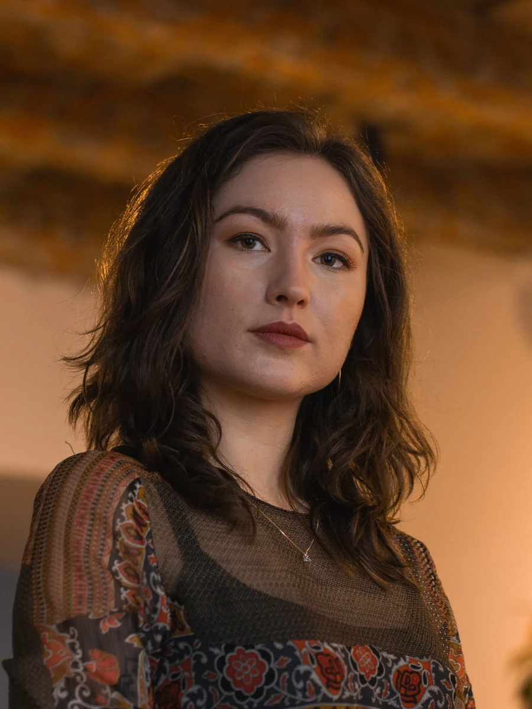
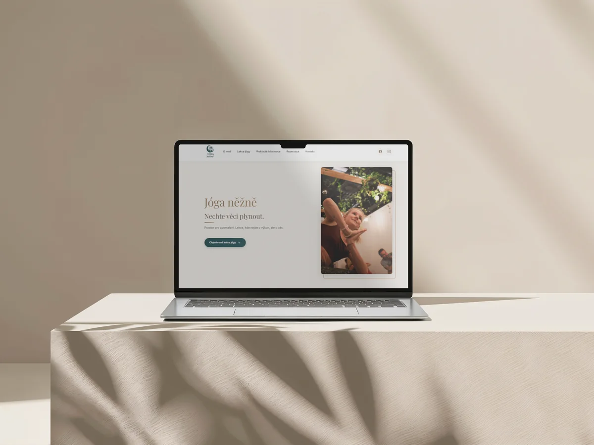
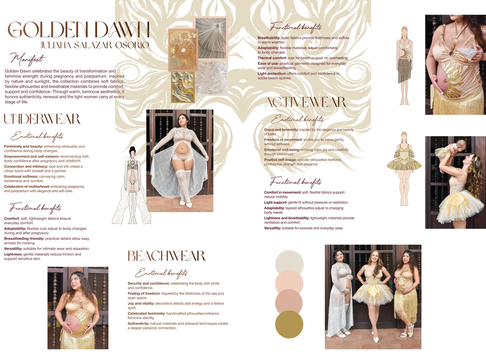
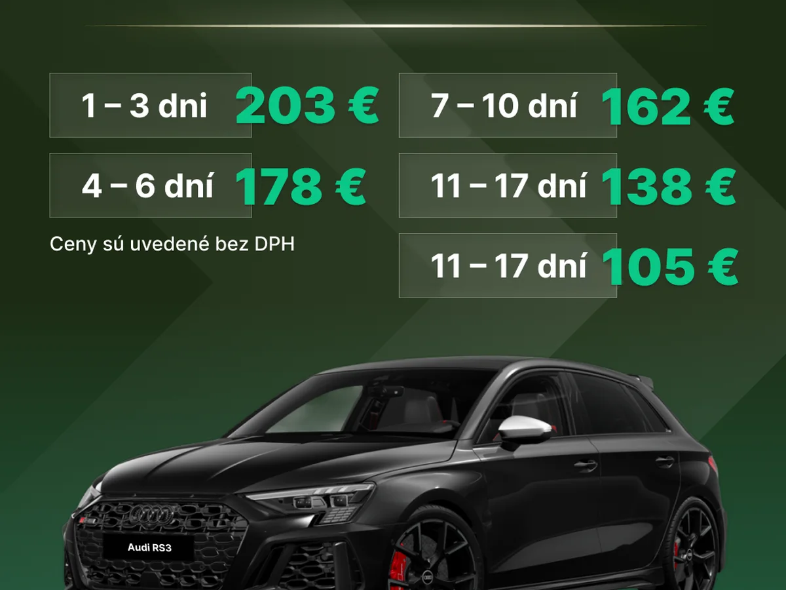

Digitálne kampane, bannery, sociálne siete, prezentácie a tlačové výstupy.
Grafická dizajnérka
Zlatica Štrkolcová
Tvorím vizuály, ktoré vedia byť jemné aj výrazné: web/UI návrhy, sociálne kampane, editorial, typografiu a print výstupy s citom pre značku.
- Adobe Illustrator
- InDesign
- Photoshop
- Figma




cit pre typografiu
digitál aj tlač
vizuál podľa značky
Vybrané práce
Portfólio s rôznymi náladami, médiami a cieľmi.
Projekty sú zostavené z podkladov v tomto priečinku: od webových konceptov cez social media vizuály až po magazínové a tlačové výstupy.
O mne
Dizajn beriem ako spôsob, ako dať veciam tón, rytmus a zrozumiteľnosť.
Som grafická dizajnérka so zameraním na vizuálnu komunikáciu, web dizajn, UI/UX, typografiu a print. Pracujem vo Figme a Adobe nástrojoch a skúsenosť z digitálnych kampaní prepájam s citom pre kompozíciu, text a atmosféru značky.
Illustrator
InDesign
Photoshop
Figma
UX/UI
Web dizajn
Typografia
Magisterské štúdium informačných štúdií a knihovníctva.
Bakalárske štúdium na Filozofickej fakulte Masarykovej univerzity.
Ako pracujem
Od nálady k použiteľnému výstupu.
Kontext
Najprv hľadám, čo má vizuál povedať, komu má slúžiť a aký tón značka potrebuje.
Systém
Vizuálne prvky skladám do čitateľnej kompozície: farba, typografia, rytmus a hierarchia.
Výstup
Pripravujem dizajn pre web, sociálne siete aj tlač tak, aby sa dal rovno používať.
Kontakt
Poďme vytvoriť vizuál, ktorý bude mať vlastný hlas.
Som otvorená spolupráci na vizuálnych identitách, kampaniach, webových návrhoch, typografii aj printových materiáloch.